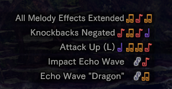

Monster Funk World - DJ Tony Anjo
Hunting Horn is a blademaster weapon with great stamina-draining and KO capabilities, with the ability to buff both the user and the whole team playing a huge
variety of songs. It provides a very wide moveset with great range and a variety of attack angles.
It works differently compared to other weapons because it's not really restrained by any particular combo, as in you can do almost any attack at almost any moment.
In this guide I'll show the hunting horn's moves, mechanics and talk about its gameplay. Because of the difference between control types I'll be referencing button inputs as Button 1, Button 2 and Special Button.
Button 1 for Left Swing and Button 2 for Right Swing.
Basic, fast pokes with good reach upwards. Right version does more damage than the left one, and both also have
a big hitbox behind your character. Useful for reaching high body parts or for punishing small windows.
Forward + Button 1
Move with good damage and forward reach, very useful as a quick poke and gap closer. This can also be performed as draw attack. Good to combo into a forward performance
afterwards, as it makes the animation play faster compared to other moves.
Forward + Button 2
Double hitting move with good reach upwards , making it great for reaching high monster parts. One special property of this move is that its able to generate 2 notes at once.
The first note is always a Note 2, but by pressing another button in sequence it generates and additional note (except Echo notes) of your choice.
Back + Button 1, Button 2 or Button 1 + Button 2
Low damage, but versatile. This attack can only be done as a follow up of other basic attacks, meaning you can't do it instantly. It generates any note of your choice (except
Echo notes) by using the corresponding input.
Forward + Button 1 + Button 2
One of your most damaging basic attacks. Has two hits, with the second part doing the most damage. Before Iceborne, it was used to wakeup monsters by hitting them with the second
part. Just like the Forward Slam, It can transition to the forward performance's fast animation.
Button 1 + Button 2
Another damaging move with a high hitbox, it also moves you backwards for positioning. You can perform a Quick Turn Around Backward Slam (QTABS for short) by pressing back before doing the
input, making so your character moves forward instead of backwards.
Slinger Button after any normal attack
Multi hitting move with the highest motion value, but with the longest animation and big sharpness loss. Its also your only move able to generate Echo Notes.
Button 1 when falling or sliding
Done by pressing button 1 after jumping from a ledge or after sliding. Always generates a Note 1. Can also transition into the fast version of the forward performance, like the forward slam and super pound.
Your song Queue is shown at the top left of the screen. Each basic move creates a note, and by combining those notes you can queue up to 3 songs. Another tip is that by making a song you don't actually lose the notes you've used. That means you can use the previous notes to create new songs after the first one. You can also choose which song you want to play first by pressing the corresponding input (Special Button for the first song, Special Button + Button 1 for the second song and Special Button + Button 2 for the third song.)

Each hunting horn has a different "set" of songs, you can look at the top right of your screen to check your hunting horn's song list.
Self Improvement is a special song shared by all hunting horns that applies a buff only to the hunting horn user, its done by combining two 1 Notes. It increases your movement speed and make so your attacks don't bounce against hard monster parts. Be sure to play this at the start of the fight as it is one of your most important songs.
Encores are done by pressing the special button again after a Performance. They are used to play a second time all of the previous songs done by your performance. Just like performances, you can use directional inputs to change the type of encore used.
All buffs can be stacked two times, meaning you need to play your songs twice or use encores to bring out their full potential.
Echo Waves are unique songs as they don't offer buffs, but they'll produce damaging shockwaves when played. The encore produced will also be affected by the number of Echo waves played in the previous performance. The most damaging option for waking up monsters is by queueing a triple echo wave performance, and hitting the monster with the last shockwave made by an encore.
Your gameplan when hunting should be as follows: play your songs to keep your buffs' uptime, stack echo waves by collecting echo notes, do performances/encores with echo waves when able.
The hunting horn's rotation should always prioritize keeping your buffs uptime, as they contribute a lot to your party's power. Hunting Horns with Attack Up and Elemental Attack Up are very valiable as they increase your party's damage by a lot.
Once your important buffs are up, your next objective is queueing up echo waves. For brief windows, quick pokes (like left/right swings, forward slams or single echo wave powered performances) are good options. For longer windows, queue up your echo waves with those pokes and an echo attack. When monster is down or is paralyzed, unleash all your echo waves with a performance and encore at the end.
Its also worth nothing that the hunting horn is a reactive weapon. Being overly agressive is risky because most of your attacks have a long recovery animation, so your gameplay should involve reacting to what the monster is doing.
Thank you for reading 😄